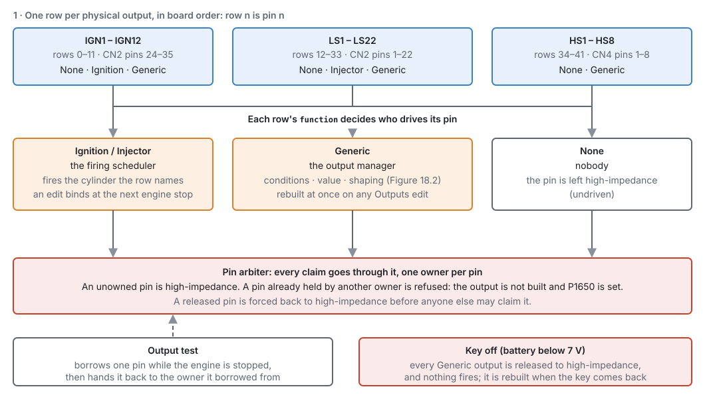
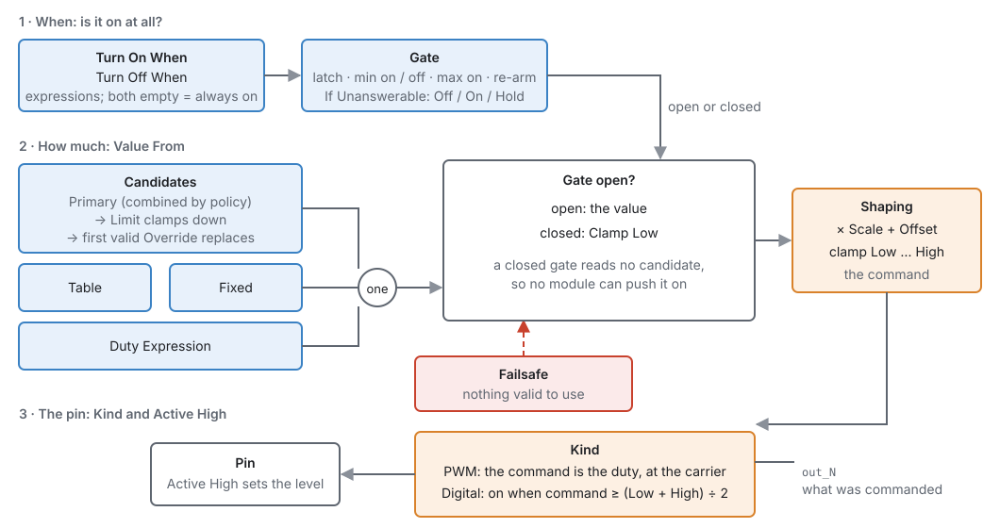
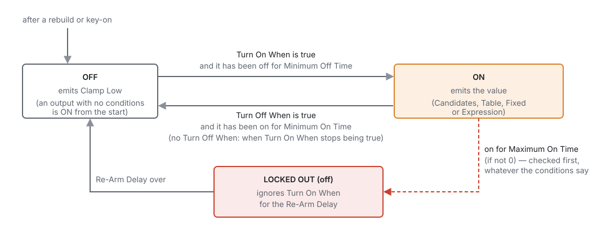
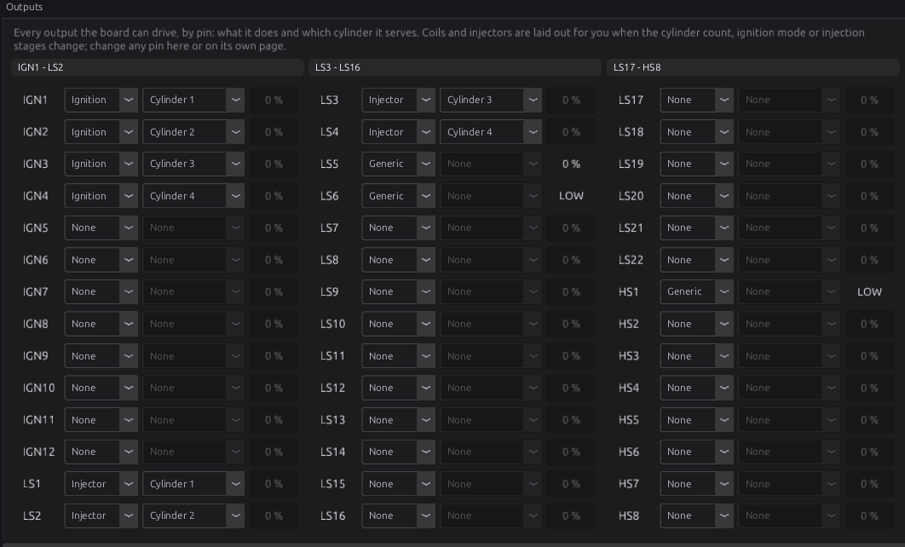
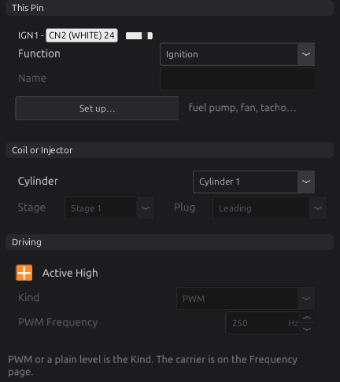
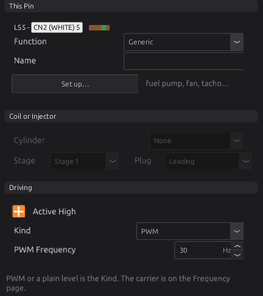
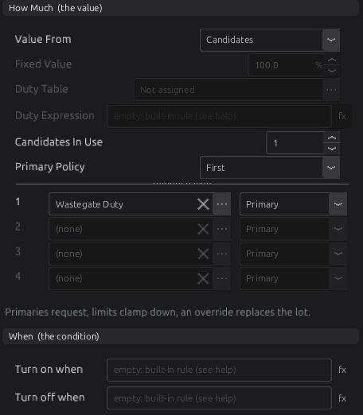
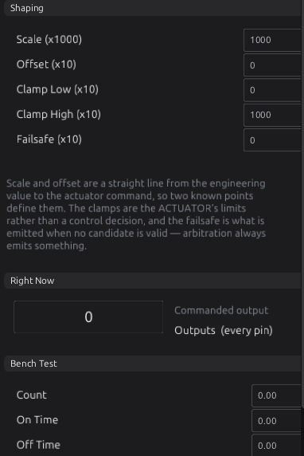
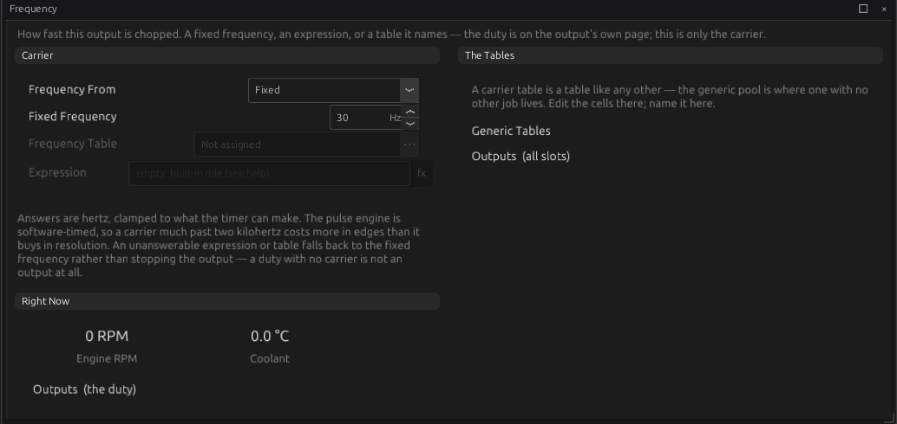

Outputs and the pin system¶
Basic → Advanced
In one sentence: every output pin on the ECU has one row in the tune that says what the pin does: fire a coil, open an injector, or drive a load such as a pump, fan or solenoid from conditions and a value you choose.
What it does¶
Basic
The ECU has 42 output pins you can wire to: twelve ignition outputs (IGN1–IGN12), twenty-two low-side outputs (LS1–LS22) and eight high-side outputs (HS1–HS8). A low-side output switches the load's ground; a high-side output switches its supply. Chapter 12 covers how to wire each kind.
In the tune, each of those pins has one row, in board order: the twelve IGN pins first, then the twenty-two LS pins, then the eight HS pins. A row's Function says what its pin does:
| Function | What the pin does | Which pins can do it |
|---|---|---|
| None | Nothing. The pin is not driven. | all |
| Ignition | Fires a coil for the cylinder the row names. | IGN pins only |
| Injector | Opens an injector for the cylinder the row names. | LS pins only |
| Generic | Drives a load from its own conditions and value: a fuel pump, a fan, a boost solenoid, a tachometer. | all |
Because a row is its pin, one pin can never be given two jobs. This is the pin system: the tune says what each pin does, and the ECU makes sure only one part of the firmware drives each pin.
You do not normally set the coil and injector rows yourself. When you set the cylinder count, engine cycle, ignition mode or injection stages (chapter 15), the studio lays them out for you. What you do set up here is everything else: every pump, fan, relay, valve and gauge the ECU drives.
Boost control, idle control, cam control and other modules work out how much they want (a wastegate duty, an idle valve duty). They do not own a pin. A Generic output delivers that demand to the pin you wired the valve to. This chapter shows how.
The two H-bridges (Half Bridge A and B) are not rows. They are owned by the H-bridge module and set up with the electronic throttle and idle stepper (chapters 21 and 22).
How it works¶
Intermediate
1 · Who drives each pin¶

- Ignition and Injector rows belong to the firing scheduler. It fires exactly what the rows say. It does not invent outputs or move them. A cylinder no row names gets no spark or no fuel, and the ECU raises a trouble code for it (see Diagnostics).
- Generic rows belong to the output manager, which runs each one every millisecond (Figure 18.2).
- None rows are left alone. The pin stays high-impedance: not driven high, not driven low.
Every owner claims its pin from the pin arbiter first. The arbiter keeps one owner per pin. A pin nobody owns, or that an owner lets go of, is forced back to high-impedance. A claim for a pin that someone else still holds is refused: the output is not built at all, and the ECU sets P1650. A pin can only have one Function, so this happens only when you change a coil or injector row to Generic while the engine runs: the firing scheduler keeps the pin until the engine stops (see When changes take effect below).
Advanced — the output test is an owner too
The bench output test borrows a pin from whoever holds it, drives it, and hands it back to the same owner when it finishes. It does this only while the engine is stopped. Handing a coil back to "nobody" would leave that cylinder without spark on the next start.
2 · What a Generic output does¶
A Generic output answers three questions every millisecond: is it on, how much, and at what frequency.

Is it on? Two conditions, Turn On When and Turn Off When, are expressions such as
clt > 95. They feed a gate that remembers its state and applies the timing rules (Figure 18.3).
If both conditions are empty, the output has no gate: it is always on, and its value alone decides what
the pin does.
How much? Value From picks one source:
- Candidates: bus channels that modules publish, such as Wastegate Duty
wastegate_duty(section 3). - Table: a table you name, read at its own axes. The eight Generic Tables exist for this (chapter 34).
- Fixed: a constant, such as 100 % for a relay.
- Expression: a formula whose number is the duty, such as
clt * 2 - 100.
While the gate is closed, the output ignores its source and sends Clamp Low instead. A closed gate does not even read its candidates, so no module can push an output on that its conditions say is off.
The value then goes through Shaping: it is multiplied by Scale, Offset is added, and the result is held between Clamp Low and Clamp High. What comes out is the command.
At what frequency, and what level? Kind decides how the command reaches the pin:
- PWM: the command is a duty cycle in per cent, switched at the output's carrier frequency. The carrier can be fixed, looked up in a table, or computed (the Frequency page).
- Digital: the pin is on or off. It is on when the command is at least halfway between Clamp Low and Clamp High. With the default clamps (0 and 100 %) that is 50 %.
Active High sets which electrical level means "on". The live command is published as a channel for
each pin (IGN1 out_1 … HS8 out_42), so you can watch and log every output.
3 · Candidates: how a module's demand reaches a pin¶
A module that wants an actuator moved publishes a demand on the bus. For example, Boost publishes
Wastegate Duty wastegate_duty, and Idle publishes Idle Duty idle_duty. A Generic output with
Value From set to Candidates lists up to four channels, each with a Role:
| Role | What it does |
|---|---|
| Primary | Makes the request. If more than one primary is valid, Primary Policy combines them: First (the first valid one, in list order), Average, Minimum or Maximum. |
| Limit | Clamps the result down. The lowest valid limit wins, so a limit can hold the output back but never push it up. |
| Override | Replaces everything. The first valid override wins. |
The order is fixed: primaries first, then limits, then overrides. The role alone decides who has authority; where a candidate sits in the list only matters between primaries under First, and between overrides.
Valid is the key word. A channel is valid while its module keeps publishing it. A module with nothing to say stops publishing, and its candidate is then skipped. It is not read as zero. For example, Boost publishes nothing below its activation RPM and pressure. If no candidate is valid, the output sends its Failsafe value.
How the roles combine
Four candidates: primary A = 40 %, primary B = 55 %, limit L = 50 %, override O.
| Case | Result |
|---|---|
| Policy First, O not valid | 40 % (A; L does not reduce it) |
| Policy Maximum, O not valid | 50 % (B would be 55, L clamps it to 50) |
| O valid and reading 0 % | 0 % (the override replaces the lot) |
| No candidate valid | the Failsafe value |
Advanced — a limit with no valid primary
The starting value is the Failsafe. If no primary is valid but a limit is, the result is the Failsafe or the limit, whichever is lower. An override that is always published (a 0/1 flag that every frame reads 0 or 1) is always valid, so it always replaces everything. An override is useful only for a channel that goes quiet when it has nothing to say.
4 · The gate: on, off and the timers¶

- Two conditions give hysteresis. A fan that turns on above 95 °C and off below 90 °C keeps its state between the two. With only Turn On When, the output turns off as soon as the condition stops being true.
- Minimum On Time / Minimum Off Time: once the output changes state, it holds that state at least this long.
- Maximum On Time (0 = no limit): after this long on, the output turns off whatever the conditions say and is locked out for the Re-Arm Delay. It is checked before anything else.
If Unanswerable decides what happens when a condition cannot be worked out, for example because it reads a sensor that has failed or was never wired. Off turns the output off, On turns it on, Hold keeps its last state. A cooling fan should fail On; a starter or fuel pump should fail Off.
5 · When changes take effect¶
-
Coil and injector rows (Function, Cylinder, Stage, Plug, Active High) take effect at the next engine stop. A row edited while the engine runs changes nothing until then.
-
Generic rows take effect at once. Any edit to any Outputs setting rebuilds every Generic output: each pin is released, forced undriven, and claimed again. Edits elsewhere in the tune (a fuel cell, a boost table) do not touch the outputs.
-
Key off: while battery voltage is below the key-on threshold (on above 8.0 V, off at 7.0 V or below), every Generic output is released and left undriven. On USB power alone, nothing is driven. The outputs are rebuilt when the key comes back.
Advanced — a rebuild starts every gated output from OFF
After a rebuild or key-on, an output that has conditions starts off, and its Minimum Off Time starts counting then. A fan with a 5 s minimum off time therefore stays off for 5 s after any Outputs edit. An output with no conditions is on at once.
Before you start¶
Basic
You need:
-
The loads wired, each to a pin that can drive it (chapter 12). The pin page shows which connector and connector pin each output is on: LS5 is CN2 pin 5, for example.
-
The engine basics set (chapter 15): cylinder count, engine cycle, Ignition Mode and the injection stages. These lay out your coil and injector rows.
- The sensors your conditions read, configured (chapter 17). A fan needs coolant temperature; a starter button needs its switch input.
- The modules whose demands you deliver, configured: Boost (chapter 24), Idle (chapter 21), cam control (chapter 25), and so on.
Setting it up¶
Basic → Intermediate
The Outputs pages are under Configuration ▸ Electrical ▸ Outputs. The Outputs page shows every pin at once. Each pin also has its own page (Outputs ▸ LS5) with a Frequency page under it.
Step 1 — Check the coil and injector layout¶
- Set the cylinder count, Ignition Mode and injection stages (chapter 15).
- Open Configuration ▸ Electrical ▸ Outputs (Figure 18.4). The studio has laid out the coils and injectors by cylinder number.
- Check each coil and injector row against your wiring. To change one, pick its Function and Cylinder here, or on the pin's own page.

The standard layout is by cylinder number. The firing order never moves an output:
| Setting | Rows it lays out |
|---|---|
| Coil-on-Plug | IGNn fires cylinder n |
| Wasted Spark | one coil per pair of cylinders, named by the lower cylinder of the pair, in cylinder order. On a 1-3-4-2 four, IGN1 = cylinder 1 (with 4), IGN2 = cylinder 2 (with 3). |
| Single Coil (distributor) | IGN1 = All Cylinders |
| Rotary | IGNr leading and IGN(4 + r) trailing for rotor r; with Single Coil, IGN1 (leading) and IGN5 (trailing) = All |
| Injectors | one block of LS pins per stage, starting at LS1. Sequential, Semi-Sequential and Sequential-Any-Sync stages get one injector per cylinder; a Bank stage splits its injectors between the banks; a Multi-Point stage's injectors are all All Cylinders. |
The studio re-lays the rows only when you change one of those settings. After that you can edit any row by hand, and it stays as you left it. A pin that is already Generic is never taken: if the layout wants it, that coil or injector moves to the next free pin of its class.
Wasted spark pairs are found at run time
Under wasted spark, a coil row names one cylinder, and the ECU also fires the cylinder half a cycle away from it. It works that companion out from the firing order each time it applies the tune, so changing the firing order re-pairs the coils without moving any output.

On a coil or injector row, the page offers:
- Cylinder
outputs.output[].cylinder: the cylinder this coil or injector serves (on a rotary, the rotor). All Cylinders is a distributor coil or a multi-point injector. Bank 1 / Bank 2 is an injector shared by every cylinder on that bank. - Stage
inj_stage(injectors): which injection stage it belongs to. A row in a stage beyond Number of Injection Stages is ignored. - Plug
ign_plug(rotary coils): the leading or trailing plug. - Active High: see Step 3. Leave it ticked for coils and injectors on this board.
Step 2 — Give a pin a job¶
Open the pin's page, for example Outputs ▸ LS5. The page is in three columns. The left column is the pin itself (Figure 18.6).

- Function
outputs.output[].function: choose Generic. The rest of the page comes alive. - Name
name: a short name for what is on the end of the wire ("Boost Sol", "Fan"). The pin name says where it is wired; this says what it is. - Set up this output…: opens the output wizard, which fills in the whole page from a template (Step 4). Use it for anything the wizard offers; set the page by hand for anything else.
Step 3 — Driving: Kind, polarity, frequency¶
-
Active High
active_high(default ticked): which level means on, for every function. On this board every IGN, LS and HS output is switched on by a high level from the processor, so leave it ticked for a normal load. Untick it only to invert an output. Getting it wrong energises the load whenever it should be idle. -
Kind
kind: PWM for something you modulate (a solenoid valve, a PWM pump, a gauge), Digital for something that is on or off (a relay, a lamp). A relay driven with PWM buzzes. - PWM Frequency
pwm_freq_hz(default 250 Hz, PWM only): the carrier. Set it for the load: the boost solenoid template uses 30 Hz. The Frequency page can make it a table or an expression instead (Step 9).
At most 16 PWM outputs
PWM outputs are timed in software by one pulse engine with 16 channels, at 10 µs resolution. A 17th Generic PWM output is not driven at all: its pin stays undriven. Make on/off loads Digital; a Digital output does not use a channel.
Step 4 — The wizard (templates)¶
Set up this output… opens Set Up LS5. Pick what the output is on the left, answer its questions on the right, and press OK. The wizard sets Function to Generic and writes the Kind, value, timings, failure direction and both conditions. It shows the conditions it will write under It will run, so you can read and edit them afterwards.
The templates come from the firmware's own definition, so the list always matches what your ECU can run. With this firmware they are:
| Template | Kind | Value | Fails | What it asks for |
|---|---|---|---|---|
| Fuel Pump | Digital | Fixed 100 % | Off | Prime Time (3 s), Stop After (1500 ms without a trigger tooth) |
| Thermo Fan | Digital | Fixed 100 % | On | Switch On Above (95 °C), Switch Off Below (90 °C); 5 s minimum on and off |
| Thermo Fan with A/C | Digital | Fixed 100 % | On | the same, plus the A/C request as a reason to run |
| Variable-Speed Fan | PWM 200 Hz | Generic Table 1 | On | switch-on and switch-off temperatures (92 / 86 °C); duty from the table |
| Starter Motor | Digital | Fixed 100 % | Off | Maximum Crank (10 s), Rest Before Retry (3 s); interlocks to tick: in neutral, clutch down, brake pressed |
| Main Relay | Digital | Fixed 100 % | On | nothing: on whenever the ECU is awake |
| Shift Light | Digital | Fixed 100 % | Off | Light On Above (6500 rpm), Light Off Below (6300 rpm) |
| Check Engine Light | Digital | Fixed 100 % | On | Bulb Check (3 s): lit at key-on; then on for any current code or level 3, fast flash for level 2 and slow flash for level 1 once their codes have cleared |
| Tachometer | PWM | Fixed 50 % | Off | Pulses per Rev (2), Squelch Below (60 rpm); frequency = rpm × pulses ÷ 60 |
| Boost Solenoid (Wastegate) | PWM 30 Hz | Candidate wastegate_duty |
Off | Stop Below RPM (200) |
| VVT Solenoid (Intake Bank 1) … (Exhaust Bank 2) | PWM 250 Hz | Candidate vvt_duty_1 … vvt_duty_4 |
Off | Stop Below RPM (200); four templates, one per cam (chapter 25) |
| Power Steering Pump | PWM 200 Hz | Fixed 100 % | Off | Stop Below RPM (200); 2 s min on, 1 s min off |
| A/C Compressor Clutch | Digital | Fixed 100 % | Off | Cut Above Throttle (90 %); 5 s min on, 10 s min off |
The full text of each template, with its conditions, is in the reference (Output templates).
The Check Engine Light is on while any code is current (Active DTC Count dtc_active) and
on at protection level 3. A protection level can hold after its codes have cleared, or act on stored
codes (chapter 29); then level 2 gives a fast flash (4 Hz) and level 1 a slow flash (1 Hz), so the
lamp still says the engine is in limp mode. A level only ever adds a flash: it never turns the lamp off
while a code is current. The key-on flash is the bulb check: a lamp that never lights at key-on is a dead
bulb or an open circuit, not a healthy engine. It fails on: if the ECU cannot read its state, the lamp
lights. Which codes are active, and why, is on the Diagnostic Trouble Codes list (chapter 44). The flashers
it uses, Flasher (slow, 1 Hz) blink_slow and Flasher (fast, 4 Hz) blink_fast, can be read by
any output's conditions.
- The numbers you enter land in the output's Template Numbers (A–D), and the conditions read them from there. Change a number later on the page, and the template still recognises the output as its own.
- Switches it reads lists the switch inputs the conditions use, and says NOT WIRED for any that is not set up. A condition that reads an unwired switch reads it as false, so an interlock you ticked but did not wire gives a starter that never cranks. The inverted box beside a wired switch is that sensor's own invert setting: changing it here changes it everywhere the switch is read.
Check the starter's interlocks
The Starter Motor template latches: one press cranks until the engine runs or Maximum Crank runs out. On a manual gearbox, keep at least one interlock (neutral or clutch) ticked and wired, or the car can be started in gear.
Step 5 — How Much: the value¶
The middle column decides the value (Figure 18.7). Only the controls for the chosen source are live.

- Value From
value_source: Candidates (default), Table, Fixed or Expression. - Fixed Value
fixed_x10(Fixed; default 100 %): the constant sent while the output is on. - Duty Table
duty_table_sel(Table): pick the table. It is read at its own axes. With no table chosen, the output sends its Failsafe. - Duty Expression
duty_expr(Expression): the number it returns is the duty. If it cannot be worked out, the output sends its Failsafe. - Candidates In Use
n_cand(Candidates, 0–4) and Primary Policyprimary_policy: how many of the four candidate rows are used, and how several valid primaries combine. - Candidate rows 1–4
cand[].sig,cand[].role: the channel (pick it with …, clear it with ×) and its Role.
Step 6 — When: the conditions¶
- Turn on when
on_exprand Turn off whenoff_expr: expressions that read any channel or setting. Leave both empty for an output driven by its value alone. Leave Turn off when empty for a plain switch. Chapter 34 covers the expression language.
Step 7 — Template Numbers and Timing¶
- Template Numbers A–D
param_a…param_d: the numbers a template's conditions read. What each means is shown on the wizard that set it. - Timing (left column, under Driving): Minimum On Time
min_on_ms, Minimum Off Timemin_off_ms, Maximum On Timemax_on_ms(0 = no limit), Re-Arm Delayrearm_ms, all in ms up to 65535, and If Unanswerableon_invalid(Off, On or Hold). How they work is in Figure 18.3.
Step 8 — Shaping, and what the output is doing now¶
The right column shapes the command, shows it live, and holds the bench test (Figure 18.8).

These five fields are stored as whole numbers, and the page shows them as stored:
| Field | Stored as | Default | Means |
|---|---|---|---|
Scale (x1000) scale_x1000 |
thousandths | 1000 | × 1.000 |
Offset (x10) offset_x10 |
tenths of a per cent | 0 | + 0.0 % |
Clamp Low (x10) clamp_lo_x10 |
tenths of a per cent | 0 | 0.0 % |
Clamp High (x10) clamp_hi_x10 |
tenths of a per cent | 1000 | 100.0 % |
Failsafe (x10) failsafe_x10 |
tenths of a per cent | 0 | 0.0 % |
- Scale and Offset convert the value into what the hardware wants: command = value × scale + offset. The defaults pass the value through unchanged.
- Clamp Low / Clamp High are the actuator's own limits. Nothing upstream can command past them. Clamp Low is also what a closed gate sends, and for a Digital output the switching point is halfway between the two.
- Failsafe is what the output sends when it has nothing valid to use: no candidate valid, no table, or an expression that cannot be worked out. Choose it as the safe state of the load, not "off" by habit.
Right Now shows the live command for this pin, the same value as its out_N channel. For a PWM
output that is its duty. For a Digital output the channel reads 100 when the pin is on and 0 when it
is off, and the Outputs page shows it as a level.
Step 9 — The Frequency page¶
Each pin has a Frequency page (Outputs ▸ LS5 ▸ Frequency) for its PWM carrier (Figure 18.9). A Digital output ignores it.

- Frequency From
freq_source: Fixed (the Fixed Frequency, the same setting as PWM Frequency), Table or Expression. - Frequency Table
freq_table_seland Expressionfreq_expr: the answer is in Hz. It is limited to 1–50000 Hz. If it cannot be worked out, or is below 1 Hz, the output falls back to the fixed frequency rather than stopping.
Keep the carrier low
The pulse engine counts in 10 µs steps. At 250 Hz a period is 400 steps, so the duty resolves to 0.25 %. At 2 kHz it is 50 steps, or 2 % per step. The studio's own advice is to stay under about 2 kHz.
Step 10 — Test it¶
With the engine stopped, the Bench Test panel on each pin page fires that output:
- Set Count (how many times), On Time and Off Time in ms.
- Press Test. What happens depends on the row's Function:
- an Ignition row charges the coil for On Time and releases it: the release is the spark;
- an Injector row opens the injector for On Time;
- anything else is switched on for On Time.
- Stop ends this pin's test; Stop All ends every test.
Test needs the key on and the engine stopped, and is greyed out otherwise while the studio is connected. With the key off nothing is driven, the test included: the ECU refuses it, and a test already running stops when the key goes off. The ECU also cancels a test the moment the engine turns, because a start takes the coils and injectors back, so on a turning engine (or a bench stimulator left spinning) the button would do nothing at all. Stop and Stop All always work.
The ECU enforces the safety rules, not the studio:
- Engine stopped only. If the engine starts turning, every test is cancelled at once.
- It ends on its own. A test stops after Count pulses, or after (On + Off) × Count + 1 s, and never later than 10 minutes, even if the studio disconnects.
- Count 0 means stop. If Count is 0, Test stops the output instead of firing it.
- On Time 0 lets the ECU choose: 3 ms for a coil, 4 ms for an injector, 2 s for anything else. Off Time 0 becomes 500 ms when Count is more than 1.
- Active High is respected, so "off" leaves the load off.
The ECU does not limit the dwell
On Time is used exactly as you set it, on a coil too. A coil held on for a long On Time saturates, and can overheat the coil or its driver. Keep coil tests to a few milliseconds.
Advanced — what the buttons send
The buttons send the ECU the command test <row> <count> <on_ms> <off_ms>, and the ECU's reply
appears in the ECU Console: what was applied, or REFUSED if the row is out of range or the
pin could not be taken. The row is counted from 0: IGN1 is 0, LS1 is 12, LS5 is 16, HS1 is 34.
Finally, burn the tune.
Worked examples¶
Intermediate
These are the settings as the page shows them. Check each against your own wiring and hardware.
Example 1 — boost solenoid on LS5, driven by Boost Control
A 3-port wastegate solenoid on LS5. Boost Control (chapter 24) publishes Wastegate Duty; this output delivers it.
| Setting | Value | Why |
|---|---|---|
| Function | Generic | |
| Kind | PWM | a modulated valve |
| PWM Frequency | 30 Hz | the boost solenoid template's value |
| Value From | Candidates | the duty comes from Boost |
| Candidates In Use / 1 | 1 / Wastegate Duty, Primary | |
| Turn on when / Turn off when | empty | Boost already decides when to ask |
| Failsafe (x10) | 0 | solenoid off: see below |
This is the setup in Figures 18.6–18.9. When Boost is off or below activation, it publishes nothing, the candidate is not valid, and the output sends its failsafe of 0 %. The Boost Solenoid (Wastegate) template does the same, and adds two conditions: on above the cranking threshold, off below 200 rpm.
The template's reasoning for the failsafe: on a conventionally plumbed 3-port valve, 0 % leaves the wastegate on its spring, which is the least boost. Check that against your own plumbing.
Example 2 — fuel pump on HS1 and thermo fan on LS6, from templates
Both come from the wizard (Step 4).
| Output | Template | Numbers | What you get |
|---|---|---|---|
| HS1 "Fuel Pump" | Fuel Pump | Prime Time 3 s, Stop After 1500 ms | Digital, on for 3 s at key-on, then on while trigger teeth are arriving; off 1.5 s after the last tooth. Fails off. |
| LS6 "Fan" | Thermo Fan | On Above 95 °C, Off Below 90 °C | Digital, on above 95 °C, off below 90 °C, at least 5 s on and 5 s off. Fails on if coolant temperature is lost. |
The pump watches trigger teeth, not sync, so the rail is up before the decoder locks, and the pump stops when the engine stops however it stopped.
Example 3 — nitrous solenoid from a 0/1 flag
Nitrous publishes Nitrous Active nitrous_active as 0 or 1 (chapter 28). Wire the solenoid's
relay to LS8.
| Setting | Value | Why |
|---|---|---|
| Function / Kind | Generic / Digital | a relay is on or off |
| Value From | Candidates: Nitrous Active, Primary | |
| Clamp High (x10) | 10 (1.0) | moves the switching point to 0.5 |
| Failsafe (x10) | 0 | no signal, no nitrous |
| If Unanswerable | Off |
The Clamp High change is the important one. A Digital output switches on halfway between its clamps. With the default clamps (0 and 100) that is 50, and a flag that reads 1 never reaches it. With Clamp High at 1.0 the switching point is 0.5, and the flag works.
Example 4 — tachometer on LS7
From the Tachometer template: Pulses per Rev 2 (a 4-cylinder tacho), Squelch Below 60 rpm.
It writes: Kind PWM, Value From Fixed 50 %, Frequency From Expression
rpm * pulses / 60, on above 60 rpm and off at or below it. At 3000 rpm the output runs at
100 Hz. Below the squelch the output is off, because the carrier cannot go below 1 Hz. How to wire
the tacho input is in chapter 14.
Tuning it¶
Intermediate → Advanced
An output has little to tune. What matters is that it does what you meant, including when something fails.
Log these channels (chapter 42): the pin's own channel (out_1 … out_42), the channel it reads
(for example wastegate_duty), and every channel its conditions read. The Standard datalog template
leaves the output channels out, so add the ones you need.
- Test every output with the bench test before the engine first runs. Listen for each injector, check each coil sparks on the cylinder you expect, and watch each relay.
- Check polarity. With the key on and the output commanded off, the load must be off. If a load runs when it should be idle, Active High is wrong.
-
Set the PWM frequency from the valve's data or the template. A valve driven too fast only sees the average and stops responding. A valve driven too slowly can buzz or move with each pulse.
-
Set the clamps to the range the actuator may be commanded. Clamp Low is also what a closed gate sends, and the failsafe is held above it too, so raise it only for a load that must never be fully off.
- Decide each failure direction. Unplug the sensor a condition reads and check that the output does what If Unanswerable says. Stop the module that feeds a candidate and check the Failsafe.
Failsafe and a closed gate go through Shaping
The Failsafe value and a closed gate's Clamp Low both pass through Scale and Offset before they
reach the pin. With the defaults this changes nothing. If you set an Offset or a Scale other than
×1, check the pin's out_N channel with the gate closed and with the source removed, and adjust.
Diagnostics¶
Intermediate
| Code | Meaning | What sets it | What to check |
|---|---|---|---|
| P1650 | Config: pin / output conflict | A Generic output could not take its pin because the firing scheduler still holds it. It also covers input pin clashes (chapter 17). | You changed a coil or injector row to Generic with the engine running. Stop the engine: the scheduler lets go, the output is built, and the code clears. |
| P1653 | A cylinder in the firing order has no coil output | No Ignition row serves a cylinder in the firing order | The coil rows on the Outputs page. A cleared row means no spark on that cylinder. |
| P1654 | A cylinder in the firing order has no stage 1 injector output | No stage 1 Injector row serves a cylinder in the firing order | The injector rows and their Stage. |
P1650 is severity level 1. P1653 and P1654 are level 3, and are checked against the rows the ECU has applied, so they change only at an engine stop. What each level does is set in the tune (chapters 29 and 44).
Output channels: one per pin, labelled with the pin name, in the Outputs category: out_1
to out_12 are IGN1–IGN12, out_13 to out_34 are LS1–LS22, and out_35 to out_42 are HS1–HS8.
Each is the command after the gate, arbitration and shaping, in 0.5 % steps. Only Generic outputs
publish one; a coil, an injector or an unused pin reads as not valid.
Troubleshooting¶
Basic → Advanced
| Symptom | Likely causes | Check |
|---|---|---|
| No Generic output does anything on the bench | Key off: on USB power alone, or with the battery below the key-on threshold, every Generic output is left undriven | Power the ECU from 12 V; key-on is decided from battery voltage |
| Output never comes on | Function not Generic; a condition reads an unwired switch; the Value source is empty | Function; the wizard's Switches it reads list; out_N; Value From and its source |
| Digital output never comes on from a 0/1 channel | The switching point is halfway between the clamps: 50 by default | Set Clamp High (x10) to 10 (Example 3) |
| Output always at its failsafe | No valid candidate (the module is off or not asking); no table chosen; the expression cannot be answered | The candidate channel in the Dashboard or log; Duty Table; the expression |
| Load runs when it should be off | Active High backwards; Failsafe set to on | Active High; Failsafe (x10) |
| Fan stays off for a few seconds after you change an output setting | Every Outputs edit rebuilds the outputs; a gated output restarts off and waits its Minimum Off Time | Expected (see When changes take effect) |
| A PWM output does nothing, others work | More than 16 Generic PWM outputs; PWM Frequency set to 0 | Make on/off loads Digital; set the frequency |
| Coil or injector edit has no effect | Firing rows apply at the next engine stop | Stop the engine |
| P1650 after changing a row | A coil or injector row changed to Generic while running | Stop the engine |
| P1653 / P1654 | A cylinder has no coil or no stage 1 injector | The rows on the Outputs page; re-set Ignition Mode or the stages to re-lay them |
| Engine cranks, no spark or no fuel, no codes | Ignition Outputs or Injector Outputs switched off (they survive a reset) | Chapter 15 |
| Bench test does nothing | Count is 0 (that means stop); the engine is turning | Count; rpm |
| Tacho reads wrong | Pulses per Rev wrong for the gauge | Most 4-stroke tachos want half the cylinder count |
Settings reference¶
The output settings are one row per pin, so they are listed here by field rather than by pin. Every
field is explained, in page order, in Setting it up: the path of each is
outputs.output[<row>].<field>, with the row counted from 0 (IGN1 is 0, LS1 is 12, HS1 is 34). The
studio's tooltip on each control carries the same help text as the definition.
The generic tables that outputs read are in chapter 34, and the full output template definitions are in the reference (Output templates).
Related¶
- Chapter 7 — The jaytek_v1 board (the connectors and pins)
- Chapter 12 — Wiring outputs (injectors, coils, relays, PWM valves)
- Chapter 15 — Engine and vehicle basics (the settings that lay out coils and injectors)
- Chapter 17 — Sensors and calibration (the inputs conditions read)
- Chapter 24 — Boost (the wastegate demand)
- Chapter 34 — Generic tables and expressions
- Chapter 43 — Bench testing
- Chapter 44 — Diagnostics and trouble codes